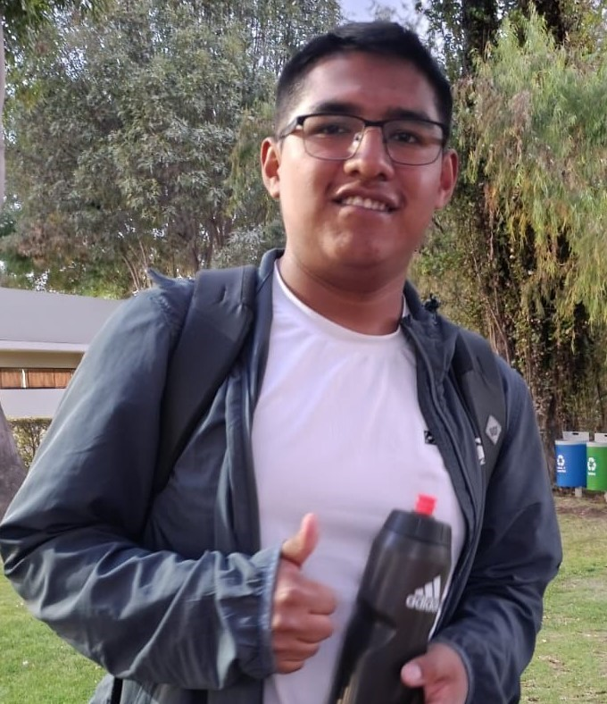

¡Hola! Soy Joham Tacora
Estudiante de Computer Science • Creativo • Innovador
Sobre mí
Soy natural del departamento de Puno, específicamente de la ciudad de Juliaca. Tengo 19 años y actualmente soy estudiante de la Universidad Católica San Pablo. Me movilizo en un vehículo Toyota, al cual le dedico un cuidado meticuloso y constante. Además de mis estudios, disfruto mucho pasar tiempo con mis amigos, considerándolo un aspecto esencial de mi vida personal.
Lo que me hace único
Mi verdadera esencia reside en mi profundo sentido de la solidaridad. Poseo una vocación genuina por ayudar a los más necesitados de mi comunidad. Esta es la cualidad que me impulsa y me define: ser un agente de cambio positivo al extender una mano a quienes más lo requieren.
Mis Pasatiempos
Programar
Disfruto crear proyectos personales y explorar nuevas tecnologías en mi tiempo libre.
Taekwondo
Unos de mis pasatiempos faboritos es el Taekwondo el cual practico , he ido a muchas competencias ,actualmente me me encunetro en el cinturon verde
Música
Me gusta escuchar todo tipo de musica,escucho una gran vairiedad mientras condusco en especial cuando viajo.